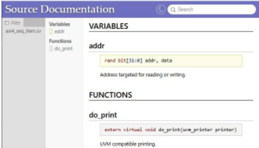
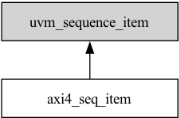
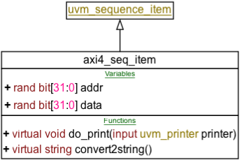
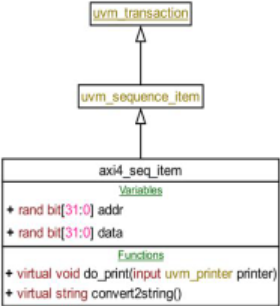
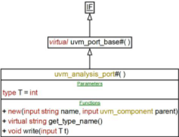
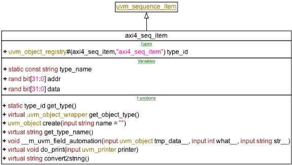
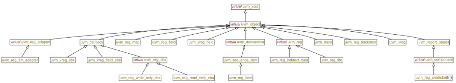
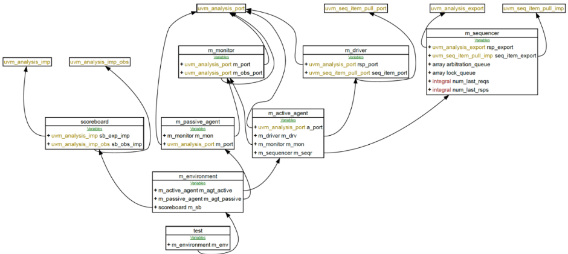
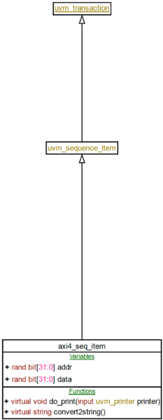
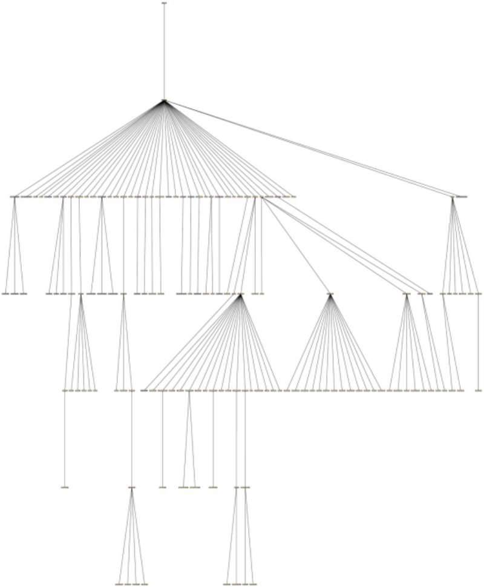

SystemVerilog 与 UVM 的可视化
验证 testbench 的文档在项目中普遍缺失或过时，因为文档相对抓 bug 没有'硬价值'，排期也不为其留时间，新人接手往往只能逐行读码。论文指出 NaturalDocs、Doxygen 等现有文档工具依赖工程师内联注释、存在学习曲线与安装授权门槛，且未专门面向 SystemVerilog 与 UVM，也无法呈现运行时环境结构。作者提出三个免费 Perl 工具：svpre.pl 展开 `define 宏并解析 `ifdef 以还原可读代码；svdiag.pl 仅对声明性结构代码做静态解析，构建 PERL5 对象内部模型后经 GraphViz dot 生成 UML 风格类图；uvmtopo.pl 解析仿真日志中 print_topology 输出的拓扑表，生成运行时 UVM testbench 结构图。工具仅依赖 Perl 核心模块与 dot，解析整个 UVM 1.2 库约需 8 秒以上，已在 GitHub 开源。结论：无需注释即可快速产出类继承图与运行时拓扑图，适合代码理解与文档生成，但目前不支持 interface class、package 与功能覆盖率。
验证 testbench 文档普遍不完整或与实现脱节：文档对项目无硬价值、排期不留时间，新人只能逐行读码。现有工具（NaturalDocs、Doxygen）依赖内联注释纪律、需要专职资源与学习曲线、存在安装与授权问题，且未专门针对 SystemVerilog/UVM，也不可视化运行时 UVM testbench 拓扑。
三个免费 Perl 脚本组成的轻量工具链：svpre.pl 是通用 SystemVerilog 预处理器，展开 `define 宏、解析 `ifdef/`ifndef，尽量保留注释与缩进以还原可读代码；svdiag.pl 是'lite 跨编译器'，仅对声明性结构代码做静态解析（忽略可执行代码），构建含 orphan 类处理的内部模型，再翻译为 GraphViz DOT 语言生成 UML 风格类图（继承箭头、+/#/- 访问级别、关键字着色、UVM 关键类金色标注、orphan 类下划线标注）；uvmtopo.pl 复用同一后端抽象语法树处理，改为解析仿真日志中 print_topology 输出的 UVM 拓扑表，生成运行时 testbench 结构图。支持按类名/类型聚焦输出、隐藏 lineage 细节、页面尺寸控制，输出 PDF/PNG/JPG。
对 UVM 1.2 整库执行 svpre.pl 预处理 + svdiag.pl 解析并生成 PDF 继承图约需 8 秒或以上（取决于机器）
工具仅依赖 Perl 核心模块与 GraphViz dot，免费开源（GitHub: https://github.com/svloghack/svdiag），无需 IT 或管理层支持即可安装
演示了从含两个 agent（一 active 一 passive）与 scoreboard 的 testbench 仿真日志生成运行时拓扑图，并支持按类名或报告类型聚焦输出
除上述演示性数据外，论文未提供系统性的量化评测（如解析准确率、大规模代码库对比、用户效率提升数据等），未在论文中说明
区别于 NaturalDocs/Doxygen 等全功能文档工具：不依赖内联注释、无需专职文档资源与团队学习曲线，只聚焦代码与关系的可视化，安装门槛极低；针对 SystemVerilog 声明性语法做专用静态解析（含 orphan 类、宏展开、`ifdef 处理）；uvmtopo.pl 利用仿真日志的 print_topology 输出可视化运行时 UVM testbench 拓扑，这是现有文档工具不具备的视角。
相关度级别：high
命中能力域：2.4 设计验证方法学 | 2.7 EDA/验证自动化与 AI 辅助
理由：团队以 UVM/SystemVerilog 为核心验证手段交付 LPDDR/HBM4/UCIe 等 IP，testbench 规模大、复用多、人员流动与跨项目支援频繁，'快速理解既有验证代码'与'testbench 文档交付'是 2.4 域的真实工程痛点；工具链免费、安装门槛低、直接作用于 UVM 代码与仿真日志，属于 2.7 域的验证流程自动化与脚本能力沉淀。虽不含 AI 元素，但其'从仿真日志自动生成环境结构视图'的思路可直接纳入团队自动化与 CI 实践。
建议动作：深入精读并做内部分享
Jamie Ridgeway, Paradigm Works, Inc., Fort Collins, CO, USA (Jamie.Ridgeway@paradigm-works.com)
摘要——在验证项目中传达已开发代码的实现是一项尤为棘手的任务。也就是说，作为加入现有项目的新人，可用的文档往往只是被粗略浏览甚至被弃之不顾，人们更倾向于直接逐行走读代码。这主要是因为与查找 bug 相比，文档对项目没有硬性价值。即使借助 NaturalDocs 和 Doxygen 等现有工具来减轻文档负担，测试平台（testbench）文档与实际实现相比也几乎普遍存在不完整或过时的问题。此外，这些工具并未专门针对验证领域占主导地位的语言 SystemVerilog 以及占主导地位的技术——通用验证方法学（UVM）。我们介绍三款由工程师开发的免费工具 svdiag.pl、svpre.pl 和 uvmtopo.pl，它们既有助于对现有已开发代码的探索和理解，也能为文档提供反映实际实现的连贯图示。
传达验证工程师在其已实现测试代码中的意图尤为困难。这是因为任何关于测试平台实现或单个测试实现的此类文档都不具有真正的价值。这一点在项目进度安排中有所体现：项目没有为可行的测试平台文档留出时间。对被验证硬件设计的实际测试远比其测试实现的文档化重要。因此，与实现相比，验证测试平台文档几乎普遍不完整或过时。
我们并非意指硬件设计项目中不存在任何验证文档。当务之急是从硬件规格说明中逐项列出必须测试的特性，以便将设计投入生产——无论是制成 ASIC、FPGA，还是其他众多量产目标平台。这份特性清单就是验证测试计划，并以通俗语言呈现在某份文档和/或电子表格中。验证团队将测试计划分解为特性覆盖计划和功能覆盖计划。某些特性可能只能通过报告通过或失败的独立定向测试（directed test）来进行测试。另一些特性则可以在采用功能覆盖率（functional coverage）来报告所测试特性的受约束随机测试平台中加以覆盖。以通俗语言记录在某份文档（通常是一份电子表格）中的定向测试与功能覆盖率点的集合，即特性覆盖计划，用于指导整体验证管理。电子设计自动化（EDA）供应商通过其验证计划管理工具集来协助这项工作，使这些以通俗语言编写的计划能够以符号方式关联到定向测试名称，或功能覆盖率与受约束随机测试名称。工程师制定的验证测试计划与 EDA 供应商在测试回归期间的运行时报告能力相结合，用于表明验证何时完成。然而，这些验证计划和报告结构中，没有任何一个能够恰当地记录测试平台或单个测试的实现。在所有这些文档中，面向工程师的测试平台文档往往价值最低。
我们认为以下情形构成了需要可行的测试平台文档规范的事件的完整集合 1：
在情形 (1) 中，测试平台文档成为交付给外部客户的交付物，从而使其具有真正的价值。情形 (2) 中的测试平台是通用的，供不同的团队使用。文档成为一种交付物，只不过是内部交付物。当量产设计出现缺陷（bug）时，理想情况下，原验证团队的一名成员可以协助对该设计进行再次测试；否则，这就成为编号为 (4) 的事件：一名与该项目毫无关联的人员被加入项目。在这种情况下，可行的文档（如果存在）应能使该工程师更快地取得富有成效的结果。
在本文中，我们介绍几款由工程师开发、以 Perl 编写的免费工具：svpre.pl、svdiag.pl 和 uvmtopo.pl [1]。这些工具既可用于辅助理解测试平台中的现有代码，也可用于测试平台文档编制。这些工具是因实际需要而开发的，因为切实可用的测试平台文档往往并不存在。svpre.pl 工具是一个通用的 SystemVerilog 预处理器，旨在清理各种
1 'Complete'（完整）一词应被视为多少有些滑稽——我们的观点是：相对于被测设计（DUT）缺陷排查而言，测试平台文档对验证项目具有真正价值的情况极为罕见。
存在于代码库中的 `include、`ifdef 和 `define 实例 [2]。svdiag.pl 工具通过 GraphViz dot 程序 [4]，将 SystemVerilog 类声明转换为风格类似统一建模语言（UML）[3] 的图示，尽管并非真正的 UML。最后，uvmtopo.pl 对 svdiag.pl 加以改造，使其成为一个可视化工具，用于呈现实际运行时的通用验证方法学（UVM）测试平台 [5]，其依据是仿真日志中报告的内容。
目前已经存在一些能够以精美方式呈现信息的代码文档工具，NaturalDocs [6] 和 Doxygen [7] 便是两个例子。二者都能够生成包含类结构信息以及实现描述的 HTML 文档。它们最主要的局限在于：任何有意义的描述都有赖于验证工程师在代码中以内联方式撰写文档，并使之符合文档工具的描述语法。以代码 1 中给出的一个非常基本的 AXI 协议 sequence item 为例。
1 2 3 4 5 6 7 8 9 10 11 12 13 class axi4_seq_item extends uvm_sequence_item; `uvm_object_utils(axi4_seq_item) // Variable: addr // Address targeted for reading or writing. rand bit [31:0] addr, data; // Function: do_print // UVM compatible printing. extern virtual function void do_print(uvm_printer printer); extern virtual function string convert2string(); endclass
在此，该 sequence item 仅有四个类成员：两个 32 位随机变量 addr 和 data，以及两个打印函数。这种内联注释格式或许并不陌生，因为 NaturalDocs 是 UVM 库 [5] 首选的文档工具。2 有关根据这些内联注释由 NaturalDocs 为该代码生成的网页，请参见图 1。

显然，为示例 axi4_seq_item 生成的文档是有所欠缺的。设想一位硬件 IP 客户，他正将该测试平台整合到自己的测试平台中以进行系统级测试。图 1 中是否有任何内容能在客户使用 axi4_seq_item 类时对其有所帮助？抑或这种呈现方式是否提供了代码本身之外的任何信息？我们认为，答案是否定的。
Doxygen 是另一种广泛可用的文档工具。然而，与 NaturalDocs 一样，它也存在类似的问题：利用代码注释本身来生成对每个类成员的描述，尽管其语法更为完善。Doxygen 的一个显著优势是它能够利用 GraphViz 的 dot 程序生成可视化图表。图 2 是针对代码 1 由 Doxygen/dot 生成的继承关系图示例。这种可视化表示辅以对每个类的文字描述，针对两种学习类型——视觉型与读写型——是视觉-听觉-读写-动觉（VARK）学习模型 [8] 的一部分。我们将可视化表示视为快速理解测试平台架构的关键，它也是我们工具集所采用的主要风格。
2 UVM 库采用了一个对 SystemVerilog 提供广泛支持的 NaturalDocs 扩展版本。据我们所知，任何公开可用的 NaturalDocs 版本中均不提供该扩展。

NaturalDocs 和 Doxygen 这两种文档工具同样存在一些实际的问题。它们的目标是为整个项目生成全面的文档。要正确部署一个文档工具，必须由专门的人员了解其功能，以及如何将这些功能最有效地用于验证项目。从本质上讲，这对于负责生成文档的工程师来说是一条学习曲线。此外，验证工程师在代码注释中使用文档工具的语法时，也有他们自己的学习曲线。正如我们在代码示例 Code 1 中所示，很容易就直接跳过文档编写这一步骤，无论是行内代码注释还是单独的文档。相比之下，我们的工具集会解析 Code 1 中的 SystemVerilog 并生成图示表示，如图 3 所示。

最后，安装 Doxygen 或 NaturalDocs 本身也可能伴随一系列注意事项。该工具是否支持我的操作系统？该工具是否需要安装额外的软件包才能运行？是否需要 IT 部门来正确安装该工具？该工具是否收取许可费用？使用许可是否允许团队在无需额外步骤或费用的情况下，在内部或对外发布文档？
我们的关注点与这些功能齐全的文档工具集的不同之处在于，我们只考虑代码及其关系的可视化。我们希望验证工程师能够使用图示来更好地理解现有代码或他们自己的实现，并将其作为传递信息的载体——无论是书面的测试平台文档，还是与他人的讨论交流。这些图示旨在易于生成，因而可能是临时性的。但对于承担环境开发或维护任务的验证工程师而言，图示所传递的信息更有可能长期留存。
尽管每一种广泛可用的文档工具在具备适当环境（管理层认可、专门的资源投入以及团队的采用）的条件下都能生成可行且连贯的文档，但我们的文档工具只有非常有限的一组目标。
拥有一个易于安装的工具——无需信息技术（IT）或管理层的协助——尤为重要。对于我们的工具集，我们选择了通用的PERL，它仅依赖于任何PERL发行版中通常都提供的核心PERL包模块。目前，使用我们的工具集所需的PERL包仅有：
此外，创建可视化所需的唯一软件包是：
我们的工具集将SystemVerilog转换为GraphViz DOT语言，具体用于有向无环图，即有向图（digraphs）[4]。dot程序在大多数Linux发行版上通常都可用；如果没有，也可以在工程师的Microsoft Windows ©或Apple MacBook©笔记本电脑上免费且轻松地安装。dot程序本身通过将工具所生成的dot语言文件转换为图示，满足了第(3)点和第(4)点的要求。
主要的图表工具 svdiag.pl 本质上是一个从声明式 SystemVerilog 到 GraphViz DOT 语言的“轻量级”交叉编译器。dot 程序将 svdiag.pl 的输出转换为 UML 风格的图，如图 3 所示。
我们在图中采用了若干特性，以便查看者能够快速理解一个或多个类。首先，继承关系由从派生类指向基类的空心箭头表示。类名清晰地显示在顶部，并占据表示该类的表格中单独的一行。类成员被归组在一起，例如变量（Variables）和函数（Functions），每组的内容按编码顺序排列（Tasks 单独显示）。在图 3 中，例如函数 do_print() 和 convert2string() 在图中并非按字母顺序排列，而是按照工程师在代码 1 中编写它们的顺序排列。该类的所有成员均具有公共（public）访问级别，并以前置的加号（+）表示。受保护（protected）成员用井号（#）表示，私有（private）成员用短横线（-）表示。SystemVerilog 关键字以红色显示，已知的 UVM 关键类以金色显示，而字符串和数字字面量则以粉色高亮显示。当继承树到达某个未知的基类时，即未被 svdiag.pl 处理过的类，该基类会以下划线显示。例如，uvm_sequence_item 带有下划线，这是因为 svdiag.pl 未处理该类，因而它被视为未知类；但它同时也是金色的，这是因为 svdiag.pl 将其识别为 UVM 库的关键类。
我们的轻量级交叉编译工具专注于 SystemVerilog 第一部分：设计与验证结构（Part One: Design and Verification Constructs）中的声明性特性。该工具不对功能代码执行任何静态或运行时分析，而是仅对结构性验证代码进行静态分析，忽略所有其他内容。这一点从代码 1 中可以最清楚地看出。axi4_seq_item 类的声明就足以生成图 3 所示的图。此外，svdiag.pl 会忽略所有编译器指令，文件包含（file inclusion）除外。例如，`uvm_object_utils() 中的任何信息都未体现在上图中。方法 do_print() 和 convert2string() 作为原型属于 SystemVerilog 语法附录 A.1.9 的一部分 [2]：
class_method ::= extern { method_qualifier } method_prototype ; | … method_prototype ::= task_prototype | function_prototype function_prototype ::= function data_type_or_void function_identifier [ ( [ tf_port_list ] ) ]
在 SystemVerilog 语法中，规则名位于 ::= 的左侧，并由右侧所示的规则组成。例如，对于任何类成员 task 或 function，其语法必须遵循 class_method 规则，而该规则又由语法中的更多规则组成。管道符 | 用于分隔该规则的不同选项。在上面的 class_method 规则中，针对方法原型声明的这一规则选项，必须以 extern 关键字开头，后跟一个 method_prototype 规则，并以分号记号（token）结尾。该关键字和记号均以红色显示。method_qualifier 规则在此处是可选的，花括号 { } 表示可以跳过或重复的规则；根据语法规则，该规则定义为以下任一关键字：
method_qualifier ::= [ pure ] virtual | class_item_qualifier class_item_qualifier ::= static | protected | local
方括号 [ ] 表示可选的规则，但与花括号不同，不能重复。例如，pure 关键字是可选的，但不能重复。上述语法所表示的所有 SystemVerilog 语法均由 svdiag.pl 解析，并且除 extern 之外，其余均显示在生成的图中。
在类声明中就地完整定义 task 或 function 体（即位于 class 与 endclass 之间）也很常见。语法通过以下规则支持这种写法（下面展示的是 function 的情况，task 请参阅语法）：
class_method ::= { method_qualifier } task_declaration | { method_qualifier } function_declaration function_declaration ::= function [ lifetime ] function_body_declaration function_body_declaration ::= … | function_data_type_or_implicit [ … ] function_identifier ( [ tf_port_list ] ) ; { block_item_declaration } { function_statement_or_null } endfunction [ : function_identifier ] lifetime ::= static | automatic
在此，svdiag.pl 解析函数标识符、返回类型、可选的生命周期属性，以及端口列表（如果存在）。然而，解析器会忽略任何 block_item_declaration 和 function_statement_or_null，转而扫描 endfunction。通过这种方式，即忽略任何构造中的运行时可执行代码，我们使解析器只关注 SystemVerilog 中的声明性语句。
svdiag.pl 根据解析得到的代码构建一个内部模型，该模型由带有各自声明内容的类结构组成，并表示为一组 PERL5 对象（即 blessed hash）。类结构对象自身就是一个命名空间。该脚本确保该命名空间内的符号命名唯一，无论是函数、任务还是类成员变量。所有类都被赋予各自的命名空间，即使它未在解析的代码中声明。参照图 3，这两个类在内部模型中由同一个类结构对象的实例来表示。类结构中的一个属性用于标识该实例是完全定义的，还是被视为孤立类（orphan）。也就是说，类名标识符被解析但从未被声明，如代码 1 的第 1 行所示。然而，只要在任意时刻解析到该类的声明，同一个孤立结构就可以被完整定义。例如，如果向 svdiag.pl 提供以下代码：
`include "axi4_seq_item.svh" `include "uvm_sequence_item.svh"
svdiag.pl 始终支持 `include。在第一行中，解析 axi4_seq_item.svh 中的代码会在内部模型中产生两个唯一的类，即 axi4_seq_item 和 uvm_sequence_item，其中后者被标记为孤立类。在第二行中，uvm_sequence_item 类被完整声明，内部模型中的孤立类随之更新为模型中的常规类实例。

现在，在图 4 中，uvm_sequence_item 类名没有下划线，表明它不是孤立类。然而，它确实继承自 uvm_transaction，而后者现在显示为孤立类。svdiag.pl 脚本默认显示所有完整声明的类的内容。在图 4 中，我们使用了 svdiag.pl 的一个命令行选项来显示所讨论类的内容，同时仅以类名指示其已知谱系。
对于 svdiag.pl 解析得到的内部模型，我们通过三条途径进行转换与输出：代码生成、显示选项以及图形的物理尺寸。
首先，每个类结构及其内部的每个组件都能够用 DOT 语言表示自身。DOT 既提供由对象之间的箭头所表示的整体图结构信息，也提供在各个对象内部进行格式化和标注的多种不同方式。在我们的图中，每个类是一个包含嵌套 HTML 表格的方框，而每个类条目则表示为表格中的一行。有关 axi4_seq_item 的 DOT 语言表示示例，请参见下方的代码 2。
1 2 3 4 5 6 7 8 9 10 11 12 13 14 15 16 17 18 19 20 21 22 23 24 25 26 27 // Take class: axi4_seq_item // Take ancestor: uvm_sequence_item // Take orphan ancestor: uvm_transaction c4 [ label = <<table title="uvm_transaction" … </ table>> ]; c92 [ label = <<table title="axi4_seq_item" port="P"> // Title row/cell table <tr><td> <table><tr><td>axi4_seq_item</td></tr></table> </td></tr> // Variables row/cell table <tr><td><table> <tr><td> Variables </td></tr> <tr><td port="v93"> + rand bit [31:0] addr </td></tr> <tr><td port="v94"> + rand bit [31:0] data </td></tr> </table></td></tr> // Functions row/cell table <tr><td><table> <tr><td> Functions </td></tr> <tr><td> + virtual void do_print( input uvm_printer printer) </td></tr> <tr><td> + virtual string convert2string()</td></tr> </table></td></tr> </table>> ]; c3 [ label = <<table title="uvm_sequence_item" … </ table>> ]; c3:P -> c92:P [ dir =back arrowtail =empty]; c4:P -> c3:P [ dir =back arrowtail =empty];
svdiag.pl 的内部模型会谨慎地用标签唯一标识每个类对象，例如代码 2 中 axi4_seq_item 类对应的 c92。默认情况下，dot 程序可以将箭头布置在任何方便的位置。然而，在此我们通过端口标签强制指定箭头尾部或头部在对象上的特定位置。第 5 行中的外层表格 P，以及各个单元格成员细节（td）——第 13 行的 v93 和第 14 行的 v94——都带有标签。考虑端口的对象间连接显示在第 26 行和第 27 行（关于变量端口的使用方式，请参见第 IV.A 节中的 uvmtopo.pl）。请注意，虽然代码 2 中显示的颜色格式与图 4 中的显示效果一致，但 DOT 语言文件中还需要额外的 HTML 标签。由 svdiag.pl 生成并用于图 4 的完整 DOT 文件，请参见附录第 VIII.A 节。
该脚本还生成用于封装各个类对象及其间箭头的 DOT 代码。目标图是有向无环图，即 digraph。虽然每个 PERL 类结构及其内部的每个成员都会生成表示自身的 DOT 代码，但顶层的 svdiag.pl 对象会生成外围的 DOT 代码，以构成一个格式良好的有向图。
1 2 3 digraph G { node [ fontname ="arial", fontsize =10, shape ="plaintext" ]; // optional print-size
4 5 6 7 8 nodesep =0.3; ranksep =0.4 // class objects // connections/arrows }
其次，在代码生成之上叠加了行格式化处理，以实现集中控制。行格式化器负责对 SystemVerilog 关键字和 UVM 关键类进行着色。此外，默认情况下，图中每个类成员均以单个表格行的形式输出。对于方法（method）而言尤其如此，因为每个方法参数的方向（input、output 或 reference）以及可选的默认值都会显示在图中，这可能导致非常长的文本行。所生成框的宽度（即换行前一行内显示的字符数）的控制方式如表 I 所示。
| Command-line option | Result | Default |
|---|---|---|
| -max-chars < num > | Sets the number of characters on one line | unlimited |
| -nocolor | Disable SV and UVM keyword coloring | enabled |
| Command-line option | Result | Default |
第三，也是最后一点，svdiag.pl 会考虑所生成图的整体尺寸。默认情况下，生成的图预期仅以数字方式查看——即通过 PDF 或图片查看器。这样做是可取的，因为可以放大查看，从而理解可能相当庞大且复杂的图。在这种情况下，代码 3 中的第 3 行为空——不提供也不需要打印尺寸信息。脚本内置了一些预设尺寸，可将生成的图限制为 poster、US letter、US legal 和 A4 等规格；此外还支持自由格式，即在命令行上指定宽度和长度，如表 II 所示。
| Command-line option | Diagram size | Generated code (default) |
|---|---|---|
| -page [ landscape_ ] poster [ ,fill | compress | auto ] -page [ landscape_ ] letter [ ,fill |
| Command-line option | Diagram size | Generated code (default) |
若在打印尺寸前加上 landscape_ 前缀，则宽度和长度值会被旋转——即横向（landscape）方向。属性 fill、compress 和 auto 决定了生成的图在页面上的紧凑程度。当为小图（如图 4）指定 fill 属性时，类框将在页面上自上而下等距排布，框之间以长箭头相连，参见附录第 VIII.B 节。然而，随着解析并显示的类越来越多，版面空间会很快被填满。
svdiag.pl 脚本有两个主要用途：为文档生成整洁易读的图，以及探索代码库以获得更深入的理解。当目标是生成文档时，最好只解析需要展示的代码，这样可以最大程度地控制图的生成方式。如果你的安装环境中可用 dot 程序，那么 svdiag.pl 可以直接调用它来生成 PDF、PNG 或 JPG 格式的图。这些图随后既可以直接导入文档，也可以截取屏幕片段后导入。在所有情况下，都会同时生成相应的 .dot 文件，必要时可以直接编辑该文件（例如删除图底部的日期）。svdiag.pl 总是会显示用于生成目标输出图文件的 dot 命令。
然而，当希望更深入地理解现有代码库时，则倾向于尽可能多地解析代码。例如，可以对 UVM 库进行整体预处理和解析，并生成图。3 当然，此时显示区域会被类和继承树所淹没。建议使用商业 PDF 查看器，通过放大生成的代码库图来查找相关的类及其关系。Linux 发行版通常已预装 evince 程序 [9]。然而，随着图的复杂度和规模不断增加，我们发现 evince 无法像商业 PDF 查看器那样放大到足够程度以查看必要的细节。尽管如此，生成的 PDF 加上自选的查看器仍是一次性查看整个代码库的最直接方式。例如，以下命令可以对整个 UVM 代码库进行预处理、解析并生成 PDF。
3 必须使用预处理器，因为整个库的声明性结构代码中都使用了宏。请注意，此过程可能需要 8 秒或更长时间，具体取决于你的机器。
svpre.pl -nouvm-macro-inst -macro-inst -keep-ws-read -o uvm_pkg.out.sv uvm_pkg.sv svdiag.pl -pdf -page landscape_letter,compress uvm_pkg.out.sv … [INFO ] svdiag: Generate : uvm.out.dot [INFO ] svdiag: write digraph [INFO ] svdiag: Executing: dot -T pdf -o uvm.out.pdf uvm.out.dot PDF created, view via: > evince uvm.out.pdf
生成的图（以 uvm_void 作为树的根节点）参见附录第 VIII.C 节。4
| Command-line option | Result | Default |
|---|---|---|
| -class < classname >[ ,classname [ ,… ]] | Indicate set of focus classes | All classes are part of focus set |
| - [ no ] vars | Disable show variables | All class variables are shown |
| - [ no ] types | Disable show types | All class typedefs are shown |
| - [ no ] constraints | Disable show constraint names | All class constraint names are shown |
| - [ no ] methods | Disable show tasks and functions | All class methods are shown |
| -hide | Alias for disabling all class detail | All detail is shown |
| -hide-lineage | Disable all class detail except for focus set | All detail on all classes is shown |
| -access < public | protected | local > |
| Command-line option | Result | Default |
svdiag.pl 脚本提供了运行时选项，可以仅列出感兴趣的类及其完整谱系。此外，谱系中的类可以包含细节，也可以不包含细节（即仅显示类名和类属性）。最后，还可以对所需的类成员细节级别进行细粒度控制，如表 III 所示。

例如，可以按照与上述命令类似的方式解析整个 UVM 库，同时为 svdiag.pl 指定 -class uvm_analysis_port 以聚焦输出，即可得到图 5。用户可以组合各种用例和命令行选项，生成代码库中所需的图，用于撰写文档或学习理解。
4 也可通过以下链接获取：https://github.com/svloghack/svdiag/blob/main/doc/DVCon2026/appendix/C/uvm_lib.pdf。
B. svpre.pl
SystemVerilog 预处理器 svpre.pl 可用于展开编译期宏，并过滤掉未使用的代码，例如 `ifdef … `else … `endif。整个代码库中经常使用 `define。这些宏可能隐藏对理解类行为至关重要的代码。或者，宏也可能只是被用来针对特定项目功能启用或禁用某个复用类的特性。例如，在代码 1 第 2 行中，`uvm_object_utils() 宏包含了图 3 中未显示的类型、变量和方法。默认情况下，svdiag.pl 会忽略宏实例化，但始终会考虑 `ifdef / `ifndef 构造。在图 6 中，axi4_seq_item 类的代码先经过预处理，随后生成了图：5
svpre.pl -I $UVM_HOME/src -macro-inst -keep-ws-read -keep-com \ -o axi4_seq_item.out.sv axi4_seq_item.svh svdiag.pl -o axi4_seq_item.pdf axi4_seq_item.out.sv
预处理步骤会实例化所有已知的宏（ -macro-inst ），保留空白字符以保证可读性（ -keepws-read ），并保留所有内嵌注释（ -keep-com ）。axi4_seq_item 类被输出到文件 axi4_seq_item.out.sv 中，其内容应尽可能接近原始文件，但同时会展开 $UVM_HOME/src/macros/uvm_object_defines.svh 中定义的 `uvm_object_utils()（假设未定义 UVM_EMPTY_MACROS）。svpre.pl 对 axi4_seq_item 类执行的输出请参见附录第 VIII.D 节。随后，svdiag.pl 步骤与 dot 程序一起生成了图 6 中的图。

svpre.pl 预处理器与商用预处理器的不同之处在于，其主要目标是理解现有代码库。当然，svpre.pl 会对必要的宏和构造进行预处理，但它还致力于根据所提供的编译期选项提高可读性。考虑宏实例化用于参数传递的一种常见用法：
1 2 3 virtual class param_base#( int val, type T); endclass class my_a extends param_base#(`PROJECT_A_PARAMS); endclass class my_b extends param_base#(`PROJECT_B_PARAMS); endclass
在这里，第 2 行和第 3 行中的不透明宏恰恰提供了基类的具体实现。虽然为每个项目追查相应的 `define 可能只是一次性的工作，但 svpre.pl 可以简化这一操作，对新手而言尤其如此。
以目视方式解析代码可能变得十分繁琐。我们的预处理器会注意保留注释，并在可行范围内尽量保留原有的空白缩进。预处理器不会重新编排代码格式，但可能会在词法记号（token）之间插入空格。相反，它会按照用户的意愿，在完成 `macro 实例化和 `ifdef / `ifndef 解析之后，决定哪些代码、注释和空白将被传递到输出中。
默认情况下，svpre.pl 不实例化宏，以便让用户拥有高保真度的控制。使用 -macro-inst 可实例化所有宏，而使用 -macro-inst -no-uvm-macros 则仅实例化用户宏。
svpre.pl 预处理器和 svdiag.pl 翻译器二者实例化的是同一个词法解释器（lexer）。因此，两者都可使用相同的命令行参数，其中包括更细粒度的控制选项。例如，默认情况下 svdiag.pl 不实例化任何宏，从而只是将相应代码从输出中移除，但 `ifdef / `ifndef 块仍会被解析。可以选用某个选项来实例化用户宏而忽略 UVM 宏，或者反之。此外，所有已知宏及其定义（若存在），以及所有遇到的 `include 的路径，都可以写入一个文件。设置独立的 svpre.pl 预处理器的目的在于进一步促进对现有代码库的理解。
将 svpre.pl 与 svdiag.pl 这两个脚本结合使用，可提供一套用于理解和可视化代码库的强大工具集。它可以处理整套代码，然后被指示基于其中代码的一个子集来生成图，而无需将代码从整个包中分离出来。在图 7 中，整个 UVM 库 [5] 经过了预处理和解析，随后仅聚焦于 uvm_reg 及相关类的一个子集来生成图，同时隐藏类本身的内容，只显示继承关系。

The uvmtopo.pl script employs the same backend abstract syntax tree handling found in svdiag.pl but replaces the SystemVerilog lexer and parser front ends with a UVM topology table parser. At SystemVerilog simulation runtime, the current testbench topology may be reported to the simulation log by:
// Generally, during end_of_elaboration_phase uvm_root utop = uvm_root::get(); utop.print_topology();
The uvmtopo.pl script searches the provided log for the key phrase (though it is configurable):
reporter [UVMTOP] UVM testbench topology:
and consumes all text until the end of the table (i.e., the entire log need not be parsed). Each class, class type, and all class members are parsed from the topology table indicated in the simulation log, an internal model built, then output in the same visualization DOT language as svdiag.pl. Class member current assigned values are not reported.
Consider the topology report in Code 4. This is a common testbench construction with an environment instantiation constructing two agents, one active and one passive, and a scoreboard.
| 0 | 1 | 2 | 3 |
|---|---|---|---|
| 1 | # UVM_INFO verilog_src/uvm-1.2/src/base/uvm_root.svh(579) @ 0: reporter UVM testbench topology: | # UVM_INFO verilog_src/uvm-1.2/src/base/uvm_root.svh(579) @ 0: reporter UVM testbench topology: | [UVMTOP] |
| 2 | # -------------------------------------------------------------- | # -------------------------------------------------------------- | # -------------------------------------------------------------- |
| 3 | # Name | Type | Size Value |
| 4 | # -------------------------------------------------------------- | # -------------------------------------------------------------- | # -------------------------------------------------------------- |
| 5 | # uvm_test_top | test | - @362 |
| 6 | # m_env | m_environment | - @376 |
| 7 | # m_agt_active | m_active_agent | - @394 |
| 8 | # a_port | uvm_analysis_port | - @585 |
| 9 | # m_drv | m_driver | - @549 |
| 0 | 1 | 2 | 3 |
10 11 12 13 14 15 16 17 18 19 20 21 22 23 24 25 26 27 28 # rsp_port uvm_analysis_port - @566 # seq_item_port uvm_seq_item_pull_port - @557 # m_mon m_monitor - @575 # m_port uvm_analysis_port - @600 # m_seqr m_sequencer - @424 # rsp_export uvm_analysis_export - @432 # seq_item_export uvm_seq_item_pull_imp - @538 # arbitration_queue array 0 - # lock_queue array 0 - # num_last_reqs integral 32 'd1 # num_last_rsps integral 32 'd1 # m_agt_passive m_passive_agent - @404 # m_mon m_monitor - @614 # m_obs_port uvm_analysis_port - @639 # m_port uvm_analysis_port - @624 # m_sb scoreboard - @414 # sb_exp_imp uvm_analysis_imp - @648 # sb_obs_imp uvm_analysis_imp_obs - @657 # --------------------------------------------------------------
The visualization of the testbench is shown in Figure 8 and generated from Code 4 with the uvmtopo.pl script:
uvmtopo.pl -pdf sim_tb_2agents.log [INFO ] uvmtopo: open file: sim_tb_2agents.log [INFO ] uvmtopo: processed 1 files [INFO ] uvmtopo: wrote file: sim_tb_2agents.dot
[INFO ] uvmtopo: wrote file: sim_tb_2agents.pdf, view via: > evince sim_tb_2agents.pdf
类树的根总是位于图的底部，与 uvm_test_top 测试在一起。根据定义，类成员中仅标示出 variables（变量）组，因为这是拓扑表中所报告的内容。虽然无法从拓扑表中确定类的继承关系，但类成员的实例化到其定义之间通过箭头标示，箭头在图中向上指向。同样，UVM 库中的关键类以金色呈现。数据成员的类型常常被标示为 integral（整数类型），以红色显示，作为对任何 SystemVerilog 整数类型的一种不透明分类。

UVM 拓扑图完全取决于表中所报告的内容。而这又取决于类中声明的类型，无论是通过 UVM 宏实例化还是手工编码。在图 6 中，`uvm_object_utils() 的展开包含了类类型信息：
1 2 3 4 const static string type_name = "axi4_seq_item"; virtual function string get_type_name () ; return type_name; endfunction
如果该类被报告到拓扑中，那么它将被标示为类似如下的内容：
# m_curr_item axi4_seq_item - @1237
m_curr_item 是某个外围类中的变量成员，而 axi4_seq_item 则是由 get_type_name() 类函数所报告的类型。然而，对于参数化类而言，这可能会带来问题。例如，如果 axi4_seq_item 类对地址和数据的大小进行参数化，那么：
1 2 3 4 class axi4_seq_item#( int MAX_WIDTH = 31) extends uvm_sequence_item; `uvm_object_param_utils (axi4_seq_item) rand bit [MAX_WIDTH-1:0] addr, data; endclass
但 `uvm_object_param_utils() 的定义既不包含 type_name 变量成员，也不包含 get_type_name() 函数。因此，拓扑中这同一个类实例将显示为可能略有误导性的内容：
# m_curr_item uvm_sequence_item - @123
虽然例如 axi4_seq_item#(64) 的实例确实是一个 uvm_sequence_item，但拓扑并未展示出完整的图景。应当注意正确地报告该类，可能的办法是手工编码这两个类成员。
1 2 3 4 const static string type_name = { $sformatf ("axi4_seq_item#(%d)", MAX_WIDTH)}; virtual function string get_type_name(); return type_name; endfunction
系统任务 $sformatf 可以在编译时被解析，从而完成常量静态字符串的赋值。这样，拓扑将标示出更有用且更准确的类类型，并且会传递到 UVM 测试平台拓扑图中：
# m_curr_item axi4_seq_item#(64) - @123
与 svdiag.pl 和 svpre.pl 类似，uvmtopo.pl 脚本可以解析整个拓扑表，但可将输出聚焦于特定的类名或一组类名，以及特定的报告类型或一组报告类型。随着 UVM 测试平台复杂度的不断增长，这一功能对于按需聚焦于测试平台的特定部分而言是必不可少的。
svpre.pl 和 svdiag.pl 脚本是基于常见的 UVM 测试平台实现以及所观察到的 SystemVerilog 而开发的。然而，我们期望不断扩展该工具集，以反映最新的技术。以下是目前的局限性，但可能并不全面，因为其偏向于作者自身的编码能力。
这些脚本目前不支持 SystemVerilog 接口类。这类结构已成为测试平台架构中不可或缺的组成部分，应当在图示中得到恰当的呈现。
svdiag.pl 所使用的内部模型目前不支持 SystemVerilog 包。这些关键字会被解析，但其作为独立命名空间这一点被忽略了。其结果是，单次解析中提供的所有包都处于同一个联合命名空间中。例如，对于同一组代码中不同包内存在相同类名的情况，svdiag.pl 将中止解析，因为在同一命名空间内出现重复
该工具套件 svpre.pl、svdiag.pl 和 uvmtopo.pl 提供了一种强大的可视化手段，既可用于呈现 SystemVerilog 现有代码库，也可用于呈现运行时仿真中的测试平台架构。它们既可以单独使用，例如仅使用 svpre.pl 对文件进行预处理以检查编译期宏展开，也可以结合使用，为工程师提供测试平台的清晰图景。这些工具可免费访问和使用，可在我们的 GitHub 站点上获取：https://github.com/svloghack/svdiag。
类 axi4_seq_item 的 DOT 语言输出通过以下命令生成：
svdiag.pl -I $UVM_HOME/src -I $UVM_HOME/src/seq -hide-lineage \ -font 10 -class axi4_seq_item -pdf axi4_seq_item.svh
注意，`include "uvm_sequence_item.svh" 被插入到文件中紧邻类声明之前的位置。命令行上给出的包含路径是处理该文件及其所包含文件所必需的。
1 2 3 4 5 6 7 8 9 10 11 12 13 14 15 16 17 18 19 20 21 22 23 24 25 26 27 28 29 30 31 32 33 34 35 36 37 38 39 40 // // svdiag.pl Copyright (c) 2022-2025 Jamie Ridgeway <svloghack@gmail.com> // Generated on Sun Nov 2 10:11:22 2025 by jamie // // __GLOBAL__: classes: 2. // __GLOBAL__: orphan classes: 1. digraph G { node [ fontname ="arial", fontsize =10, shape =plaintext ]; nodesep =0.3 ranksep =0.3 // Take class: axi4_seq_item // Take ancestor: uvm_sequence_item // Take orphan ancestor: uvm_transaction c4 [ label = <<table title="uvm_transaction" border="0" cellpadding="0" cellspacing="0" cellborder="1" port="P"> // Title row/cell table <tr><td> <table border="0" cellborder="0" cellpadding="0" cellspacing="0"> <tr><td align="center" balign="center" cellpadding="1" cellspacing="1"><u><font color="gold4">uvm_transaction</font></u></td></tr> </table> </td></tr> </table>> ]; c92 [ label = <<table title="axi4_seq_item" border="0" cellpadding="0" cellspacing="0" cellborder="1" port="P"> // Title row/cell table <tr><td> <table border="0" cellborder="0" cellpadding="0" cellspacing="0"> <tr><td align="center" balign="center" cellpadding="1" cellspacing="1">axi4_seq_item</td></tr> </table> </td></tr> // Variables row/cell table <tr><td> <table border="0" cellborder="0" cellpadding="0" cellspacing="0"> <tr><td align="center" balign="center" cellpadding="1" cellspacing="1"><font point-size="8" color="darkgreen"><u> Variables </u></font></td></tr> <tr><td align="left" balign="left" cellpadding="2" cellspacing="1" port="v93"><b> + </b> <font color="firebrick4">rand</font> <font color="firebrick4">bit</font>[<font color="deeppink1">31</font>:<font color="deeppink1">0</font>] addr</td></tr> <tr><td align="left" balign="left" cellpadding="2" cellspacing="1" port="v94"><b> + </b> <font color="firebrick4">rand</font> <font color="firebrick4">bit</font>[<font color="deeppink1">31</font>:<font color="deeppink1">0</font>] data</td></tr> </table>
svdiag.pl -I $UVM_HOME/src/base -I $UVM_HOME/src/seq -I $UVM_HOME/src -hide-lineage \ -page letter,fill -font 10 -class axi4_seq_item -pdf axi4_seq_item.svh
请注意，`include "uvm_sequence_item.svh" 被插入到文件中紧接在类声明之前的位置。命令行中的 include 路径是处理该文件及其所包含文件所必需的。在图中，uvm_transaction 是未知的，因此带有下划线，这是因为它未被包含在解析过程中；而 uvm_sequence_item 是已知的，但其细节被隐藏（-hide-lineage）。方框之间较大的间距是由于填满了可用的 US letter 尺寸空间（-page letter,fill）所致。

一个文件 uvm_lib.sv，其中仅包含针对 UVM 1.2 版本库的 `include "uvm_pkg.svh"，对其进行了预处理、解析并生成图（仅显示继承关系），所使用的命令如下：
svpre.pl -I $UVM_HOME/src -macro-inst -o uvm_lib.out.sv uvm_lib.sv svdiag.pl -hide-detail -class uvm_void -page letter,fill -o uvm_lib.pdf uvm_lib.out.sv
树的根是 uvm_void 类，树的其余部分是其谱系（可通过 PDF 阅读器缩放查看原图，参见我们的 GitHub 仓库 https://github.com/svloghack/svdiag/tree/main/doc/DVCon2026/appendix/C）。

svpre.pl -I $UVM_HOME/src -macro-inst -keep-ws-read -keep-com \ -o axi4_seq_item.out.sv axi4_seq_item.svh
请注意，`include "uvm_macros.svh" 已被插入到文件中紧接在类声明之前的位置。下面的代码给出了代码 1 中仅 axi4_seq_item 类本身部分的输出。生成的文件还包含了来自 uvm_macros.svh 的所有注释，为清晰起见，此处将其忽略。
1 2 3 4 5 6 7 8 9 10 11 12 13 14 15 16 17 18 19 20 21 22 23 24 25 26 27 28 29 30 31 32 33 34 35 36 37 38 39 40 41 42 43 44 45 46 47 48 49 50 51 class axi4_seq_item extends uvm_sequence_item ; typedef uvm_object_registry # ( axi4_seq_item , "axi4_seq_item" ) type_id ; static function type_id get_type ( ) ; return type_id :: get ( ) ; endfunction virtual function uvm_object_wrapper get_object_type ( ) ; return type_id :: get ( ) ; endfunction function uvm_object create ( string name = "" ) ; axi4_seq_item tmp ; if ( name == "" ) tmp = new ( ) ; else tmp = new ( name ) ; return tmp ; endfunction const static string type_name = "axi4_seq_item" ; virtual function string get_type_name ( ) ; return type_name ; endfunction function void __m_uvm_field_automation ( uvm_object tmp_data__ , int what__ , string str__ ) ; begin axi4_seq_item local_data__ ; typedef axi4_seq_item ___local_type____ ; string string _aa_key ; uvm_object __current_scopes [ $ ] ; if ( what__ inside { UVM_SETINT , UVM_SETSTR , UVM_SETOBJ } ) begin if ( __m_uvm_status_container . m_do_cycle_check ( this ) ) begin return ; end else __current_scopes = __m_uvm_status_container . m_uvm_cycle_scopes ; end super . __m_uvm_field_automation ( tmp_data__ , what__ , str__ ) ; if ( tmp_data__ ! = null ) if ( ! $cast ( local_data__ , tmp_data__ ) ) return ; end endfunction // Variable: addr // Address targeted for reading or writing. rand bit [ 31 : 0 ] addr , data ; // Function: do_print
52 53 54 55 56 // UVM compatible printing. extern virtual function void do_print ( uvm_printer printer ) ; extern virtual function string convert2string ( ) ; endclass